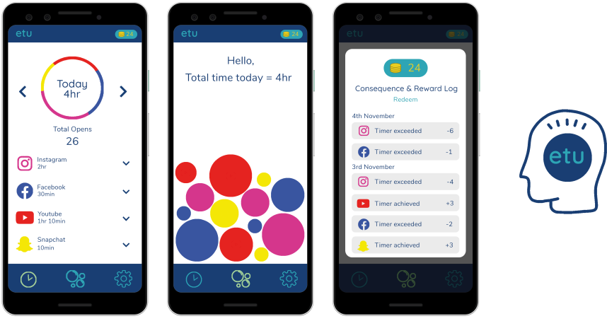

Digital wellbeing is huge in this day and age and digital wellbeing apps are going to become more necessary as time goes on. Mobile phones are becoming more and more addictive with several apps being created with the aim to keep the user scrolling and essentially helping them procrastinate.
The issue with the current digital wellbeing apps out there is that they don’t actually stop you from spending lots of time on your phone, the timers are very easy to extend or just delete and there isn’t any consequence for going over your pre-set time limit.
‘etu’ helps the user break social media habits & addictions and helps to create a more conscious user by tracking how much time the user spends on certain social media and entertainment applications.